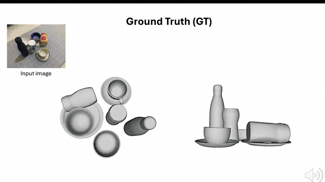

MessyKitchens: Contact-rich object-level 3D scene reconstruction
Project Page Paper Data ↓737/mo Video
MessyKitchens provides high-quality synthetic training data and real-world test scenes for contact-rich kitchen reconstruction, with improved registration and reduced inter-object penetration. Built on it, MOD achieves state-of-the-art reconstruction and physical metrics.